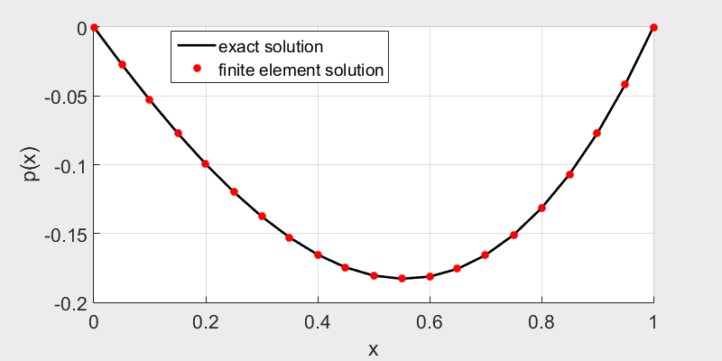
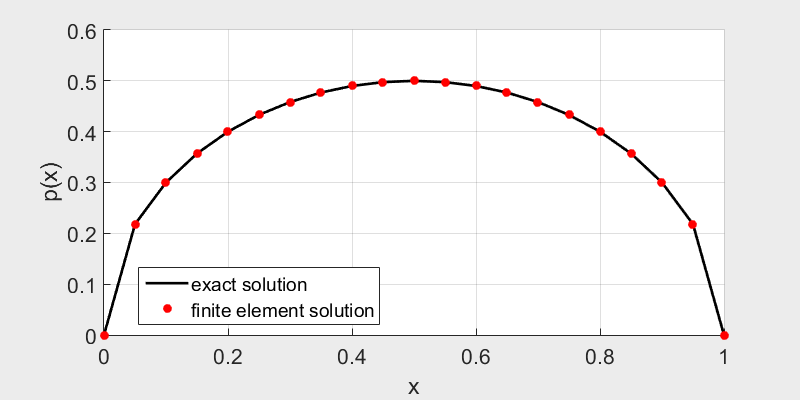
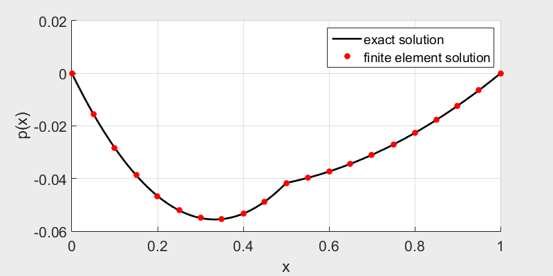
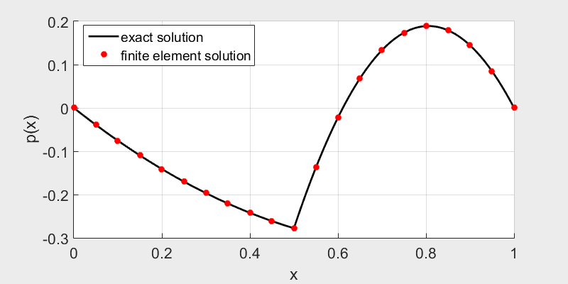

Raw thoughts on non-linear Poisson equations (Part. I)
start from the one-dimensional cases
Sep.2017
$1. Fist attempt
I'd like to start with the simple one-dimensional equation
\( \frac{\mathrm{d}}{\mathrm{d}x} \left( f(x)\frac{\mathrm{d}p}{\mathrm{d}x} \right) = s\),
and consider a special case, where \( x\in [0,1]\),
\(s=1\), \( f(x) = \frac{1}{x+1} \).
As for the boundary condition, we assume \( p(0)=0\) and \( p(1)=0 \).
Here we should make the notice that the value of \( f(x) \) is limited, to make it always safe,
I just simply assume \( f(x)>0 \) within the definition region.
Analytical solution The analytical solution for the equation is quite straight-forward,
a direct intergral of both sides of the equation gives
\[ f(x)\frac{\mathrm{d}p}{\mathrm{d}x} = x + C_1\Longrightarrow \frac{\mathrm{d}p}{\mathrm{d}x} = \frac{x+C_1}{f(x)}\]
where \(C_1\) is an unknown contant to be determined later. Since \(f(x)=\frac{1}{x+1}\), the equation becomes
\[ \frac{\mathrm{d}p}{\mathrm{d}x} = (x+C)(x+1) = x^2+(1+C_1)x+C_1 \]
Another intergral gives
\[ p = \frac{x^3}{3} + \frac{1+C_1}{2}x^2 + C_1 x + C_2 \]
where \(C_2\) is also a constant.
To determine \(C_1\) and \(C_2\), we obtain the boundary conditions,
\[
\left\{
\begin{array}{l}
& p(0)=0 \longrightarrow C_2 = 0 \\
& p(1)=0 \longrightarrow \frac{1}{3}+\frac{1+C_1}{2}+C_1=0
\end{array} \right.
\Longrightarrow
C_1 = -\frac{5}{9}, C_2=0
\]
Thus the solution to the 1D equation is
\[ p(x) = \frac{x^3}{3} + \frac{2}{9}x^2 - \frac{5}{9}x \]
Finite Element Solution Consider the general poisson equation \( \nabla( f(x,p) \nabla p ) = s \), the weak form writes, \[ \int_\Omega \delta p\{\nabla[ f(\vec{x},p) \nabla p ] - s\} \mathrm{d}V = 0 \Longrightarrow \int_\Omega \delta p\left\{ \nabla f \nabla p + f\nabla^2 p - s \right\} \mathrm{d}V=0 \] \[ \Longrightarrow \int_\Omega \left\{ \delta p \nabla f\nabla p + f \nabla ( \delta p \nabla p ) - f\nabla\delta p \nabla p - \delta p\cdot s \right\} \mathrm{d}V = 0 \] \[ \Longrightarrow \int_\Omega f\nabla\delta p\nabla p \mathrm{d}V -\int_\Omega \delta p \nabla f\nabla p \mathrm{d}V =-\int_\Omega \delta p \cdot s \mathrm{d}V +\int_\Gamma f \delta p (\nabla p\cdot n) \mathrm{d}\Gamma \] An easy assumption is constant \(f\) within each element, such that \(\nabla f=0\).

The finite element solution fits well with the exact solution.
Click here to download the matlab source code.
$2. Non-linear Poisson equation
Now we try to make a small difference by assuming \(f\) is depending on \(p\). Readers may
be very familiar with the term \( f(p)\nabla p\) when \(f(p)=p\), the convection term in Navier-Stokes
equation. Here we try to solve the equation (assume \(p \geq 0\))
\[ \frac{\mathrm{d}}{\mathrm{d}x} \left( p\frac{\mathrm{d}p}{\mathrm{d}x} \right) + 1 = 0\]
with boundary conditions
\[ p(0) = 0, \qquad p(1) = 0\]
It's not hard to find a analytical solution to the equation
\(p(x) = \sqrt{-x^2+x} \).
But in order to get the numerical solution, more efforts is needed - we should repeat and repeat again
our solution process to get convergence. And sometimes, the solution even blows up.
The simplest algrithm tries to seek for a convergent series of \(p_0, p_1, p_2,...,p_i,...\), with enought
large \(i\) values, \( p_{i+1} = p_{i}\). At each iteration step, we upgrade \(f(p)\) using the
previous solution \(p_i\), thus a new solution \( p_{i+1} \) is generated. We also introduce a relaxation factor
\( \alpha\in (0,1]\) to prevent from blowing up.

The finite element solution fits well with the exact solution.
Click here to download the matlab source code.
$3. Discontinuity
What if \(f\) is a discontinous function of \(x\)? Let's consider the following example
\[\frac{\mathrm{d}}{\mathrm{d}x}\left( f(x)\frac{\mathrm{d}p}{\mathrm{d}x} \right) = 1 \]
with the definition domain \(x\in[0,1]\), and \(f(x)\) is defined as
\[f(x) = \left\{ \begin{array}{l}
f_1, 0 \leq x < 0.5 \\ f_2, 0.5 < x \leq 1
\end{array} \right. \]
The boundary conditions is \(p(0) = a\) and \(p(1)=b\).
First we try to find an analytical expression of the solution by integrals,
\[ f(x) \frac{\mathrm{d}p}{\mathrm{d}x} = x+A \Longrightarrow \frac{\mathrm{d}p}{\mathrm{d}x} = \frac{x+A}{f(x)}
\Longrightarrow \frac{\mathrm{d}p}{\mathrm{d}x} = \left\{ \begin{array}{l}
\frac{x+A}{f_1},\quad 0 \leq x < 0.5 \\ \frac{x+A}{f_2},\quad 0.5 < x \leq 1
\end{array} \right.
\Longrightarrow p(x) = \left\{ \begin{array}{l}
\frac{x^2}{2f_1}+\frac{Ax}{f_1}+B,\quad 0 \leq x < 0.5 \\
\frac{x^2}{2f_2}+\frac{Ax}{f_2}+C,\quad 0.5 < x \leq 1
\end{array} \right.
\]
where \(A\), \(B\) and \(C\) are to be determined. According to boundary conditions we have
\[ p(0) = B = a; \quad p(1) = \frac{1}{2f_2}+\frac{A}{f_2}+C = b \]
and to keep \(p(x)\) continous at \(x=0.5\), we have
\[ p(0.5) = \frac{1}{8f_1}+\frac{A}{2f_1}+B = \frac{1}{8f_2}+\frac{A}{2f_2}+C \]
The solution is
\[ \left\{ \begin{array}{l}
A = -\frac{ 3f_1+f_2+8(a-b)f_1f_2 }{4(f_1+f_2)} \\
B = a \\
C = b + \frac{f_1-f_2 + 8(a-b)f_1f_2 }{4f_2 (f_1+f_2)}
\end{array} \right.
\Longrightarrow p(x) = \left\{ \begin{array}{l}
\frac{x^2}{2f_1} -\frac{ 3f_1+f_2+8(a-b)f_1f_2 }{4f_1(f_1+f_2)}x + a, \quad 0 \leq x < 0.5 \\
\frac{x^2}{2f_2} -\frac{ 3f_1+f_2+8(a-b)f_1f_2}{4f_2(f_1+f_2)}x + b + \frac{f_1-f_2 + 8(a-b)f_1f_2 }{4f_2 (f_1+f_2)} , \quad 0.5 < x \leq 1
\end{array} \right.
\]


\(f_1=1, f_2=5, a=0, b=0 \qquad\qquad\qquad\qquad\qquad\qquad\qquad f_1=1, f_2=-0.1, a=0, b=0\)
Click here to download the matlab source code.
We can see the solution is still \(C^1\) continuous, but not \(C^2\) continuous.
The first thing to note is that the solution only exists when \(f_1+f_2 \neq 0\) and \(f_1f_2\neq 0\).
Moreover, we should note that
to get an accurate solution, there should be a node right at the gap (in this case, \(x=0.5)\). Since we
always evaluate the value \(f(x)\) at the center of an element, this avoids the undefined \(f(0.5)\).